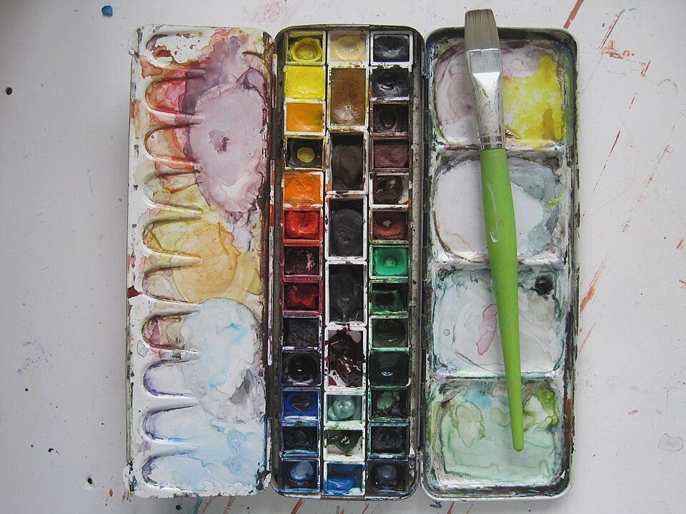
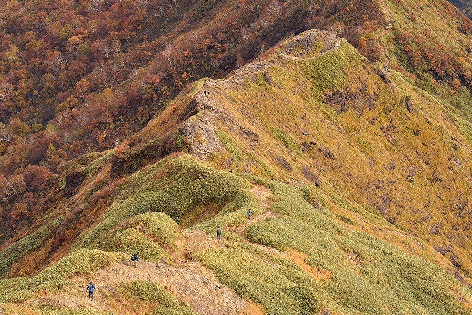
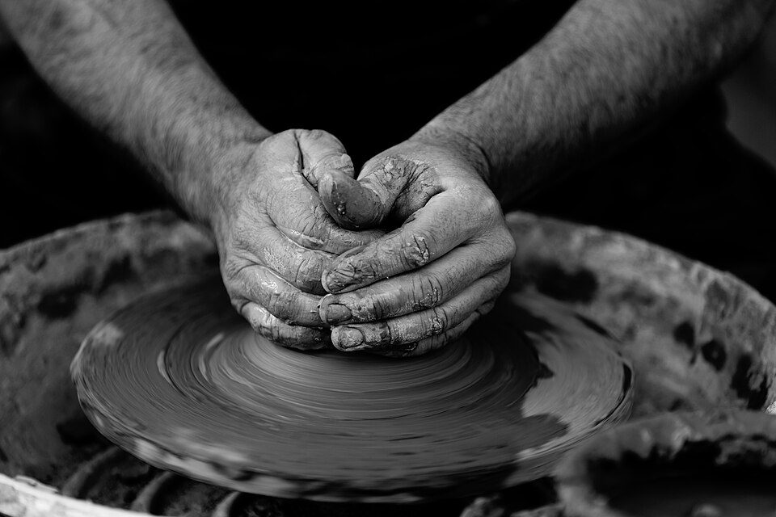

趣味の見つけ方：統計で見るみんなの趣味、始めやすさ、健康との関係と決まり
要点まとめ
趣味を探すとき、体験談やおすすめの一覧を見ることが多いと思います。この記事では、筆者の好みで並べるのではなく、国の統計（総務省の社会生活基本調査、スポーツ庁・文化庁の世論調査、家計調査）と、日本生産性本部の「レジャー白書2026」、日本で行われた追跡研究をもとに、みんながどんな趣味をしているか、始めやすさ、健康との関係、費用、始めるときの決まりを整理しました。

みんなの趣味を統計で見る
総務省の社会生活基本調査は、昭和51年から5年ごとに行われている国の調査で、10歳以上の人の生活時間や余暇の活動を調べています[8]。公表されている最新の結果は、令和3年（2021年）の調査です[9]。
見方: 行動者率は、過去1年間にその活動をした人が、10歳以上の人口に占める割合です[1]。「趣味・娯楽」は男性86.8％、女性85.8％で、男女の差は小さくなっています[1]。学習は、学業以外の学習・自己啓発・訓練です[9]。
2021年は、コロナ禍の1年間の数字
カラオケは30.7％→13.5％、映画館は39.6％→29.8％に
2021年の調査が対象にしたのは、2020年10月20日から2021年10月19日までの1年間で、緊急事態宣言が2回あった時期です[9]。2016年と比べると、カラオケや映画館での映画鑑賞が大きく下がり、ゲームは35.8％から42.9％に上がりました[9]。旅行・行楽は、5年前より24.0ポイント下がって49.5％でした[9]。
年齢で大きく変わる趣味、変わりにくい趣味
ゲームは10〜14歳で79.7％、70〜74歳で12.5％
ゲーム・マンガ・映画館での映画鑑賞は若い年代ほど高く、園芸・庭いじりは年代が上がるほど高くなり、70〜74歳で43.1％です[10]。読書（マンガを除く）は、15〜74歳ではどの年代も3割前後でした[10]。ウォーキング・軽い体操は、70〜74歳の53.6％が最も高くなっています[11]。
| 年齢 | 趣味・娯楽（全体） | ゲーム | マンガ | 映画館 | 園芸 | 読書 | ウォーキング・軽い体操 |
|---|---|---|---|---|---|---|---|
| 10〜14歳 | 95.5 | 79.7 | 70.2 | 52.7 | 7.2 | 42.6 | 32.0 |
| 20〜24歳 | 95.2 | 71.8 | 60.6 | 59.9 | 4.8 | 33.5 | 41.4 |
| 40〜44歳 | 91.7 | 59.6 | 55.5 | 36.1 | 24.4 | 33.2 | 45.0 |
| 60〜64歳 | 85.7 | 26.3 | 19.2 | 21.5 | 37.9 | 32.9 | 48.3 |
| 70〜74歳 | 78.9 | 12.5 | 6.1 | 10.6 | 43.1 | 28.3 | 53.6 |
| 75歳以上 | 67.2 | 5.9 | 2.7 | 4.6 | 36.0 | 21.4 | 43.0 |
一部の年代だけを抜き出しました。「映画館」は映画館での映画鑑賞、「読書」はマンガを除く趣味としての読書です。
2025年の余暇と、始められない理由
2021年より新しい動きは、日本生産性本部が2026年10月27日に発表した「レジャー白書2026」で分かります[12]。2025年の状況を、15〜79歳の3,279人に調べたものです[2]。社会生活基本調査とは対象の年齢や調べ方が違うので、数字をそのまま比べることはできません。
見方: 国内観光旅行は前年より70万人減ったものの、4年連続の首位でした。外食は370万人増えて2位になりました[2]。2025年の余暇市場は78兆1,320億円で、前年より3.9％増えています[2]。
2025年に新しい余暇を始めた人は28.0％
きっかけの1位は「健康・体力・気分転換」で32.0％
新しく始めた人の割合は、男性10代が57.1％で最も高く、若い年代ほど高くなっています[2]。始めた917人に聞いたきっかけ（複数回答）は、「健康・体力・気分転換の必要性を感じた」32.0％、「家族・友人・知人に誘われた」25.8％、「時間・収入など生活環境に余裕ができた」22.2％、「始めやすい場所・時間帯だった」22.0％の順でした[2]。
始めたかったのに始められなかった人は41.4％
最も大きな理由の2位は「費用がかかりすぎる」19.4％
筆者の提案: 費用が気になるときは、公民館の講座や公立の博物館など公的な場から試す方法があります（文化・学びの趣味）。始めた理由に「誘われた」「始めやすい場所・時間帯だった」が多いことも、選ぶときの手がかりになります。
種類と軸で選ぶ
趣味を「することの種類」で分け、統計の数字を並べました。とくに断りがなければ、数字は社会生活基本調査（2021年、10歳以上の行動者率）です。
| 種類 | 趣味の例（行動者率、2021年） | 関係する統計 |
|---|---|---|
| 観る・聴く | 音楽鑑賞53.5％、映画（映画館以外）52.7％、映画館29.8％、スポーツ観覧14.5％、美術鑑賞11.4％[9] | 外出して文化芸術を鑑賞した人46.9％（2025年度）[13] |
| つくる | 写真の撮影・プリント21.9％、料理・菓子作り19.0％、日曜大工11.0％、楽器の演奏10.2％、編み物・手芸8.8％[9] | 創作・演奏など、鑑賞以外の文化芸術活動をした人14.1％（2025年度）[13] |
| 育てる | 園芸・庭いじり・ガーデニング26.0％[9] | 1世帯の年間の支出は、園芸用品4,780円、園芸用植物3,725円（2025年）[14] |
| 体を動かす | ウォーキング・軽い体操44.3％、器具を使ったトレーニング12.9％、ジョギング・マラソン11.1％、サイクリング8.2％、つり7.8％、登山・ハイキング7.7％[9] | 20歳以上で週1日以上運動・スポーツをする人51.7％（2025年度）[15] |
| 学ぶ | 学習・自己啓発・訓練39.6％[9] | 公民館の学級・講座と諸集会498,971件（2023年度）[16] |
| 出かける | 旅行・行楽49.5％、遊園地・動植物園・水族館など19.0％、キャンプ6.0％[9] | 国内観光旅行の参加人口4,610万人（2025年）[2] |
| 遊ぶ・読む | ゲーム42.9％、マンガ36.8％、読書31.6％、カラオケ13.5％[9] | 「推し活」をした人23.6％（2025年）[2] |
| 人の役に立つ | ボランティア活動17.8％[9] | 年齢別では65〜69歳の23.4％が最も高い[1] |
ひとりで続ける種目、仲間と行う種目
ゴルフやテニスは9割以上が複数人、歩くのは約9割が一人
スポーツ庁の調査で、複数人で行う割合が高かったのは、ゴルフ（コースでのラウンド）96.3％、バドミントン96.1％、テニス・ソフトテニス95.8％でした[15]。ウォーキング、階段昇降、トレーニングなど実施率の高い種目は、一人で行う人が9割前後です[15]。複数人で行う割合が高い種目ほど、充実度・幸福度（Well-being）が高い傾向がありましたが、これは相関で、原因と結果の関係までは分かりません[15]。
毎回の時間と、続ける頻度
短時間で頻度が高い種目と、長時間で頻度が低い種目
スポーツ庁は、体操・ウォーキング・トレーニング・階段昇降などを「実施時間は短いが実施頻度が高い種目」、ゴルフ（コースでのラウンド）・釣り・スキー・登山などを「実施時間は長いが実施頻度が比較的低い種目」に分けています[15]。
種類ごとの、このサイトの関連記事
始め方や行き先は、種類ごとに別の記事で調べています
- 体を動かす: ロードバイクの始め方、キャンプの始め方、六甲全山縦走ガイド
- 出かける: 国内旅行の行き先、海外旅行の行き先、関東の工場見学、関西の工場見学、日本酒と関西の酒蔵見学
- 学ぶ: 大学の公開講座、図書館・学習・資格試験、教育訓練給付
- 遊ぶ・観る・育てる: 謎解きゲーム、雲の種類と天気、GREEN×EXPO 2027（国際園芸博覧会）
- 道具をそろえる: メルカリやヤフオクで買うとお得なもの
体を動かす趣味
20歳以上の51.7％が、週1日以上運動・スポーツ
1週間の実施時間の中央値は69.0分
スポーツ庁の令和7年度の調査では、20歳以上で週1日以上運動・スポーツをする人は51.7％で、令和4年以降ほぼ横ばいです[15]。男性55.0％、女性48.8％で、男女の差は過去最大になりました[15]。1週間の実施時間の中央値は、男性90.0分、女性59.8分です[15]。
この1年間にした種目は、ウォーキングが1位
ウォーキング60.3％、階段昇降21.5％、トレーニング12.3％
同じ調査で、この1年間にした種目は、ウォーキング、階段昇降、トレーニング、ランニングの順でした[18]。男性が女性より高い種目はランニングやゴルフなど、女性が高い種目は「エアロビクス・ヨガ・バレエ・ピラティス」「体操」「ダンス」です[18]。
国の目安は、1日60分・約8,000歩
大人は、歩く程度以上の活動を1日60分以上
厚生労働省の「健康づくりのための身体活動・運動ガイド2023」は、大人には、歩行かそれと同じ以上の強さの身体活動を1日60分以上（1日約8,000歩以上）、息が弾み汗をかく程度以上の運動を週60分以上、筋力トレーニングを週2〜3日勧めています[19]。高齢者は、身体活動を1日40分以上（1日約6,000歩以上）が目安です[19]。
| 強さ | 例（メッツ） |
|---|---|
| 3メッツ未満 | ストレッチング2.3、ガーデニング（コンテナを使用）2.3、ピアノの演奏2.3、ヨガ2.5[19] |
| 3〜6メッツ未満 | ボウリング・社交ダンス・太極拳3.0、釣り（全般）3.5[21]、卓球4.0、テニス（ダブルス）4.5、バドミントン5.5[19] |
| 6メッツ以上 | ゆっくりしたジョギング6.0、山を登る（0〜4.1kgの荷物）6.5、サイクリング（約20km/時）8.0、水泳（クロール、ふつうの速さ）8.3[19] |
メッツは、体を動かす強さを表す単位です。国の目安の「歩行と同じ以上の強さ」は3メッツ以上にあたります[19]。

文化・学びの趣味
外出して文化芸術を鑑賞した人は46.9％
鑑賞しなかった理由の1位は「関心がない」24.0％
文化庁の令和7年度の「文化に関する世論調査」では、この1年間に外出して文化芸術を鑑賞した人は46.9％でした。多いのは映画（アニメを除く）、歴史的な建物や遺跡（15.7％）、美術（13.0％）です[13]。鑑賞しなかった理由は「関心がない」に次いで、「入場料・交通費など費用がかかり過ぎる」12.4％、「生活圏で公演や展覧会などが行われていない」9.6％でした[13]。
創作や演奏をした人は14.1％
文学・音楽・美術などの創作3.3％、演奏や出演3.2％
同じ調査で、鑑賞以外の文化芸術活動（創作・演奏・支援など）をした人は14.1％で、令和5年度（13.3％）、令和6年度（13.6％）とほぼ横ばいです[13]。マンガ・映像・CG・ゲームなどの創作をした人は3.2％でした[13]。

学習・自己啓発をした人は39.6％
30〜34歳は5年前より7.1ポイント上昇（2021年）
社会生活基本調査では、学業以外の「学習・自己啓発・訓練」をした人は39.6％で、5年前より2.7ポイント上がりました[9]。年齢別では20〜24歳が56.5％、75歳以上が23.3％です[1]。種類別では、男性は「パソコンなどの情報処理」、女性は「家政・家事」が最も高くなっています[9]。
公民館・図書館・博物館は、身近な学びの場
図書館と博物館の数は過去最多（令和6年10月1日現在）
| 施設 | 数 |
|---|---|
| 公民館（類似施設を含む） | 13,031 |
| 図書館 | 3,400 |
| 博物館 | 1,346 |
| 博物館類似施設 | 4,426 |
| 劇場・音楽堂等 | 1,800 |
| 生涯学習センター | 1,079 |
| 社会体育施設 | 45,171 |
趣味と健康の研究
注意
ここで紹介する研究は、どれも観察研究です。趣味や運動をしている人としていない人の、その後を比べたもので、趣味が病気を防ぐという因果関係を示したものではありません。研究自身も、考えに入れられなかった要因などの限界を挙げています[4][23]。
| 研究 | 対象 | 追跡 | 主な結果 |
|---|---|---|---|
| JAGES（日本老年学的評価研究）、2020年の論文 | 要介護認定を受けていない高齢者49,705人[3] | 6年[3] | 趣味の種類が多いほど、認知症を伴う要介護認定のリスクが低い傾向。グラウンド・ゴルフや旅行を趣味とする人でも低かった[3] |
| JAGES、2022年の論文 | 65歳以上の48,216人[24] | 平均5.6年[24] | 余暇活動の数が多いほど死亡のリスクが低い直線的な関係（調整ハザード比0.93）。体を動かす活動・集団での活動で関連が強く、文化的な活動・一人の活動では関連がなかった[24] |
| 国立がん研究センター 多目的コホート研究 | 1993〜1994年に40〜69歳だった22,377人（茨城県水戸・高知県中央東の保健所管内）[4] | 2016年まで[4] | 趣味がない人に比べ、趣味がある人は18％、たくさんある人は22％、認知症のリスクが低かった[4] |
| 日本体育大学・筑波大学（2026年9月3日発表） | 茨城県笠間市の高齢者5,074名（平均73.0歳）[23] | 4年[23] | 運動をしていない人に比べ、ゲートボール・グラウンドゴルフをする人は32％、筋力トレーニングをする人は74％、認知症のリスクが低かった[23] |
ハザード比は、比べる相手と比べたリスクの大きさで、1より小さいほどリスクが低いことを表します。「○％低い」も同じ考え方の数字です。
趣味がないのは、病気の始まりのせいかもしれない
認知機能が落ちて趣味を持てなくなる「因果の逆転」
国立がん研究センターは、高齢者を短い期間だけ追った研究では、認知症の症状の一つとして趣味を持てなくなっている（因果の逆転）ために、趣味がないことが見かけ上のリスクになっている可能性があったと説明しています[4]。そのため、この研究では中年期に答えた人を長く追跡しました[4]。
国は、社会活動をする人を増やす目標
社会活動をする人の割合を、ベースライン値から5％増やす
国の健康づくりの方針「健康日本21（第三次）」は、就労・就学を含む何らかの社会活動をしている人の割合を、ベースライン値から5％増やす目標を立てています（令和14年度）[20]。65歳以上では10％の増加を目標にしています[20]。
費用と、始めるときの決まり
趣味や娯楽に使うお金は、二人以上の世帯で月32,125円
単身世帯は月21,173円（2025年平均）
総務省の家計調査で、2025年の「教養娯楽」への支出は、二人以上の世帯で月32,125円でした。前年より名目6.2％、実質3.7％増えています[25]。内訳は、教養娯楽サービス18,774円、教養娯楽用品7,935円、書籍・他の印刷物2,910円、教養娯楽用耐久財2,505円です[25]。
| 品目 | 年間の支出 |
|---|---|
| パック旅行費 | 38,290 |
| 宿泊料 | 35,994 |
| 月謝類（うちスポーツ月謝10,705、音楽月謝4,576、語学月謝2,223） | 31,661 |
| 運動用具類（うちスポーツウェア11,208） | 16,862 |
| ゴルフプレー料金 | 10,221 |
| 映画・演劇等入場料 | 8,383 |
| 書籍 | 7,201 |
| スポーツクラブ使用料 | 5,419 |
| 文化施設入場料 | 3,765 |
| 写真撮影・プリント代 | 3,015 |
| ゲームソフト等 | 2,306 |
| 楽器 | 2,171 |
| 手芸・工芸材料 | 788 |
筆者の見解: 世帯全体の平均なので、その趣味を始める人が実際に払う額の目安にはなりません。趣味の種類ごとの始めるときの費用を示す公的統計は、見つかりませんでした。
趣味によっては、始める前に知っておきたい決まりや届け出があります。主なものを1行ずつまとめました。
| 趣味 | 決まり・手続き |
|---|---|
| 登山 | 警察庁は登山計画書（登山届）の提出を呼びかけている[26]。長野県は条例で、指定登山道を通るときの届出を義務にしている（罰則はない）[5][27] |
| 富士登山 | 山梨県側（吉田ルート）は通行料1人1回4,000円、1日4,000人まで[28]。静岡県側は入山料1人1回4,000円と事前学習が義務[29] |
| 海の釣り・潮干狩り | 都道府県の漁業調整規則などで、漁具・漁法、禁止区域・期間、大きさの制限が決まっている[30]。アワビ・ナマコ・シラスウナギを許可なく採ると、3年以下の拘禁刑または3,000万円以下の罰金[31] |
| 川・湖の釣り | 漁業権のある川や湖では、漁協の遊漁規則で、遊漁料の額と遊漁承認証のことが決められている[6] |
| クロマグロ釣り | 令和8年4月から届出制。1人各期間1尾まで[32] |
| ミニボート | 長さ3m未満かつ機関出力1.5kW（2馬力）未満なら、船舶検査と小型船舶免許は不要[33] |
| ドローン | 屋外で飛ばす100g以上の機体は登録が必要（2022年6月20日から義務）[34]。空港周辺や150m以上の空域などを飛ばすときは許可・承認が必要[35] |
| サイクリング | 令和8年4月1日から、16歳以上の自転車の運転者は「青切符」（交通反則通告制度）の対象[36] |
| 狩猟 | 狩猟免許は4種類。銃猟免許は20歳以上、網猟・わな猟免許は18歳以上[37] |
| きのこ・山菜採り | 食用と確実に判断できないキノコは、採らない・食べない・売らない・人にあげない[38]。令和7年の山岳遭難の6.5％は山菜・茸採り[26] |
| 梅酒づくり | 自分で飲むなら、アルコール分20度以上で酒税が課税済みの酒に漬けてよい。米・麦などの穀類やぶどうは混ぜられず、販売もできない[39] |
| 作品を売る | 営利を目的とした継続的な副業の収入は雑所得[40]。給与を1か所から受ける人は、給与以外の所得が20万円を超えると確定申告が必要[41]。生活で使っていた古着や家財の売却は非課税[42] |
| 写真・動画 | 撮影のときに軽微な構成部分として写り込んだ他人の著作物は、正当な範囲内で利用できる（著作権法第30条の2）[43] |
| コンサート・観戦 | チケット不正転売禁止法（令和元年6月14日施行）で、特定興行入場券の不正転売が禁止されている[44] |
| オンラインゲーム | 子どもの無断課金などの相談が寄せられている。相談件数は2025年度に6,234件[45] |
2025〜2026年に始まった主な決まりと、統計の予定です。
- 2025年
静岡県側の富士登山で、入山料・事前学習などが条例で義務に
午後2時から翌午前3時に入山するときは山小屋の宿泊が必要[29]
- 2026年4月
クロマグロの遊漁が届出制に
届出は年に1度だけでよい[32]
- 2026年4月1日
16歳以上の自転車の運転者が青切符の対象に
- 2026年10月20日
令和8年社会生活基本調査を実施
結果は、集計が終わったものから順に公表される[8]
注意
令和7年の山岳遭難は3,122件、遭難者は3,623人で、死者・行方不明者は332人でした。原因は道迷いが30.9％で最も多くなっています[26]。単独で登山して遭難した人は、複数で登山した人より、死者・行方不明者になる割合が高くなっています（15.3％と5.5％）[26]。
今回確認できなかった点
- 令和8年社会生活基本調査の結果がいつ公表されるか（公式ページは「順次」とだけ記載）
- 趣味の種類ごとに、始めるときにかかる費用を示す公的統計
- レジャー白書2026の調査の時期と方法（公表資料で確かめられたのは、対象の年齢と人数だけ）
- 静岡県側の富士登山の規制が、2026年も2025年と同じか
- 写真の肖像権や撮影禁止、アマチュア無線の免許についての国の説明（ページを開けなかった）
- 2021年より新しい、年齢別・種類別の趣味の公的統計
出典（45件）
閲覧日はいずれも2026年11月11日〜12日
- 令和3年社会生活基本調査 生活時間及び生活行動に関する結果 結果の概要（PDF）（総務省統計局）
- レジャー白書2026 主なポイント（PDF）（日本生産性本部）
- 高齢者の趣味の種類および数と認知症発症：JAGES 6年縦断研究（2020年、PDF）（日本公衆衛生学会（日本公衆衛生雑誌 第67巻第11号））
- 多目的コホート研究 趣味と要介護認知症との関連について（国立がん研究センター）
- 登山計画書を届出しましょう（長野県）
- 漁業法（第170条 遊漁規則）（e-Gov法令検索）
- 無人航空機の登録制度（国土交通省）
- 令和8年社会生活基本調査の概要（総務省統計局）
- 令和3年社会生活基本調査 生活時間及び生活行動に関する結果 結果の要約（PDF）（総務省統計局）
- 令和3年社会生活基本調査 生活行動に関する結果 第4表 男女，年齢，趣味・娯楽の種類別行動者率，平均行動日数（Excel）（総務省統計局（e-Stat））
- 令和3年社会生活基本調査 生活行動に関する結果 第3表 男女，年齢，スポーツの種類別行動者率，平均行動日数（Excel）（総務省統計局（e-Stat））
- 「レジャー白書2026」プレスリリース（2026年10月27日、PDF）（日本生産性本部）
- 文化に関する世論調査 報告書（令和7年度調査、PDF）（文化庁）
- 家計調査 品目分類（全品目）（2025年改定）：支出金額（年）二人以上の世帯（CSV）（総務省統計局（e-Stat））
- 令和7年度「スポーツの実施状況等に関する世論調査」の結果を公表します（令和8年3月11日、PDF）（スポーツ庁）
- 令和6年度社会教育統計（社会教育調査の結果）の公表について（PDF）（文部科学省）
- 令和7年度「スポーツの実施状況等に関する世論調査」調査の概要（PDF）（スポーツ庁）
- 令和7年度「スポーツの実施状況等に関する世論調査」調査結果の概要（別紙、PDF）（スポーツ庁）
- 健康づくりのための身体活動・運動ガイド2023（PDF）（厚生労働省）
- 国民の健康の増進の総合的な推進を図るための基本的な方針（健康日本21（第三次）、PDF）（厚生労働省）
- 改訂版「身体活動のメッツ（METs）表」（PDF）（国立健康・栄養研究所）
- 来館案内 交通・料金・開館時間（東京国立博物館）
- NEWS RELEASE ゲートボール・グラウンドゴルフや筋力トレーニングが認知症発症のリスク低下と関連（令和8年9月3日、PDF）（日本体育大学・筑波大学）
- Prospective Study of Engagement in Leisure Activities and All-Cause Mortality Among Older Japanese Adults（2022年）（日本疫学会（Journal of Epidemiology 第32巻第6号））
- 家計調査報告 家計収支編 2025年（令和7年）平均結果の概要（PDF）（総務省統計局）
- 令和7年における山岳遭難の概況等（PDF）（警察庁）
- 長野県登山安全条例について（概要）（PDF）（長野県）
- 山梨県富士山吉田口県有登下山道の通行について（山梨県）
- 今年の開山期から富士山では登山規制を行います！（県民だより2025年5月号）（静岡県）
- 遊漁・海面利用の基本的ルール（水産庁）
- 密漁を許さない ～水産庁の密漁対策～（水産庁）
- クロマグロ遊漁の部屋（水産庁）
- 遊漁の部屋（水産庁）
- 無人航空機登録ポータルサイト（国土交通省）
- 無人航空機の飛行許可・承認手続（国土交通省）
- 自転車は車のなかま～自転車はルールを守って安全運転～（警察庁）
- 狩猟免許を取得する［狩猟の魅力まるわかりフォーラム］（環境省）
- 毒キノコによる食中毒に注意しましょう（厚生労働省）
- 【自家醸造】Q1 消費者が自宅で梅酒を作ることに問題はありますか。（国税庁）
- No.1500 雑所得（国税庁）
- No.1900 給与所得者で確定申告が必要な人（国税庁）
- No.1906 給与所得者がネットオークション等により副収入を得た場合（国税庁）
- 著作権法（第30条の2 付随対象著作物の利用）（e-Gov法令検索）
- チケット不正転売禁止法（文化庁）
- オンラインゲーム（各種相談の件数や傾向）（国民生活センター）
写真・画像の出典（3件）
- 使い込んだ水彩絵の具のパレットと筆
写真: 100wass／Wikimedia Commons（CC BY-SA 4.0） - 谷川岳の登山道（群馬県・新潟県）
写真: Raita Futo from Tokyo, Japan／Wikimedia Commons（CC BY 2.0） - 陶芸のろくろでの成形（白黒写真）
写真: Quino Al quinoal／Wikimedia Commons（CC0）